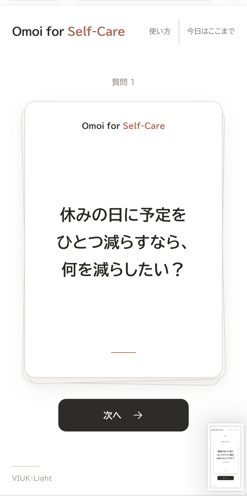

日々の気持ち
最近の出来事や、そのときの気持ちを振り返る。
ひとりで振り返る
自分の「Omoi」に、耳を傾ける。
ひとりで、日々の気持ちや自分にとって大切なことを振り返る質問カードです。言葉がまとまらなくても、問いを読んで心の中で考えるだけで使えます。

普段の過ごし方や、休みたいと感じること、自分が大切にしたいもの。問いを手がかりに、今の自分に目を向ける時間をつくれます。
Lite / Deepで問いの踏み込み度を、通常 / 深掘りで追加の問いの表示方法を選べます。自分の気持ちに合った設定から始められます。
最近の出来事や、そのときの気持ちを振り返る。
休み方や、日常で大切にしたい時間を考える。
価値観や、これから意識したいことに目を向ける。
「Self-Careの質問カードをはじめる」から、設定画面を開きます。
Lite / Deepと通常 / 深掘りを選び、「質問カードをはじめる」を押します。
心の中で考えるだけでも使えます。問いを飛ばすことも、途中で終えることもできます。
深掘りでは「次へ」で裏面の追加の問いへ進み、もう一度押すと次のカードへ進みます。「今日はここまで」でいつでも終了できます。
Self-Careの操作ガイドを見る医療的な診断・治療や、心理状態の評価を行うものではありません。考えることが負担になったら、問いを飛ばしたり、途中で終えたりできます。
回答の入力・送信・保存機能はありません。
安全な使い方とデータの扱いを見る